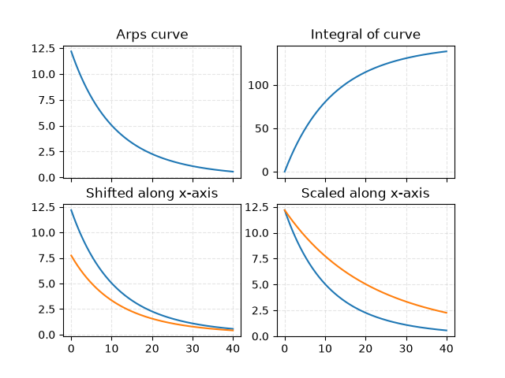

Note
Go to the end to download the full example code.
Curve methods
Plot an Arps curve, its integral and shifted/scaled curves.

Integral from 0 to infty: 148.41
q_1=12.182 h=0.119 D=0.093
import matplotlib.pyplot as plt
import numpy as np
from dca.decline_curve_analysis import Arps
fig, axes = plt.subplots(2, 2, sharex=True, sharey=False)
ax1, ax2, ax3, ax4 = axes.ravel()
# Create evaluation grid and model
t = np.linspace(0, 40, num=2**8)
curve = Arps(5, 2.5, -2)
ax1.set_title("Arps curve")
ax1.plot(t, curve.eval(t))
ax2.set_title("Integral of curve")
ax2.plot(t, curve.eval_integral_from_0_to_T(t))
ax3.set_title("Shifted along x-axis")
ax3.plot(t, curve.eval(t))
ax3.plot(t, curve.shift_and_scale(shift=-5).eval(t))
ax4.set_title("Scaled along x-axis")
ax4.plot(t, curve.eval(t))
ax4.plot(t, curve.shift_and_scale(scale=2).eval(t))
# Print some information
integral = curve.eval_integral_from_0_to_inf()
print(f"Integral from 0 to infty: {integral:.2f}")
q_1, h, D = curve.original_parametrization()
print(f"{q_1=:.3f} {h=:.3f} {D=:.3f}")
for ax in [ax1, ax2, ax3, ax4]:
ax.grid(True, ls="--", alpha=0.33)
plt.show()
Total running time of the script: (0 minutes 0.163 seconds)